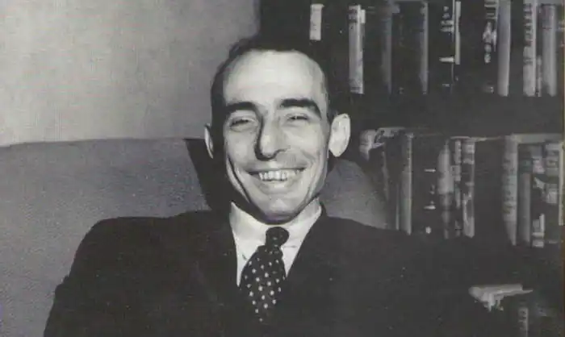

Едмонд Мур Гемілтон народився 21 жовтня 1904 року в США в місті Янгстаун (штат Огайо) і став третьою дитиною у сім'ї. Його батько працював у місцевій газеті художником-карикатуристом, мати до заміжжя викладала у школі. Після народження сина батько Едмонда залишив роботу в газеті та придбав невелику ферму у селі Поланд (Огайо). 1911 року він отримав роботу в Ньюкастлі, куди й переїхала вся родина. Після закінчення школи Едмонд Гемілтон вступив до престижного коледжу Вестміністер у місті Іст-Вілмінгтон, який закінчив достроково у віці 14 років.
У науковій фантастиці його дебют розпочався з оповідання "Бог — чудовисько Мамурта", яке з'явилося 1926 року у серпневому випуску журналу Weird Tales. У тому номері за рейтингом Гемілтон поступився лише своєму кумиру Абрахаму Мерріту, відтіснивши на третє місце популярного на той час автора літератури жахів Говарда Лавкрафта. Гемілтон швидко став одним із головних членів групи письменників, які публікувалися у Weird Tales і зібрані головним редактором журналу Фарнсуортом Райтом. До тієї ж групи входили ще такі відомі письменники як Говард Лавкрафт та Роберт Говард. У період з 1926 по 1948 рік у журналі Weird Tales було опубліковано 79 творів Гемілтона, що зробило його одним із найплодючіших письменників (тільки Сеабурі Куїнн та Август Дерлет публікувалися частіше за нього).
У проміжку між кінцем 20-х і початком 30-х Гемілтон публікувався у всіх американських pulp-журналах, що видавали наукову фантастику. Розповідь Гемілтона "Острів безрозсудності" (The Island of Unreason) (Wonder Stories, травень 1933) була нагороджена премією Жюля Верна як найкраща науково-фантастична розповідь року (це була перша НФ-премія, що вручається за результатами голосування читачів; прообраз премії Х'юго, заснований 1953 року). У той час Гемілтон був шанований і вважався ветераном серед письменників Weird Tales. Наприкінці 30-х років у Weird Tales були надруковані кілька видатних фантастичних оповідань Гемілтона, з яких найбільше виділялося оповідання "Хто має крила" (He That Hath Wings) (1938) — найбільш популярне і перевидане найчастіше. Потім Гемілтон поринув у створення серії оповідань, головною дійовою особою яких був супергерой Курт Ньютон. У 40-50-ті роки Гемілтон написав один сотні оповідань у рамках цієї серії, які спочатку друкувалися в журналах, а пізніше були опубліковані у вигляді 13 "романів". Ідею створення серії Гемілтон підказав редактор Морт Вайзенгер. Обидва раніше взяли участь у створенні легендарного героя — Супермена. У повоєнні роки популярність Гемілтона пішла на спад. Йому вдалося опублікувати кілька вдалих романів: "Зірка смерті" (1966), трилогія про Зоряного Вовка ("Зоряний вовк I: Зброя ззовні" (1967), "Зоряний вовк II: Закриті світи" (1968), "Зоряний вовк III: зіркових вовків" (1968)). У 1946 році Едмонд Гемілтон одружився з письменницею Лі Дуглас Бреккетт, яка теж писала фантастику. Через три роки після весілля подружжя Гемілтонів переселилося на схід США, на ферму в Кінсмені (Огайо), яка належала далеким родичам Гемілтона. 1 лютого 1977 року Едмонд Гемілтон помер, не дочекавшись публікації своєї останньої збірки, складеної дружиною, — "Краще Едмонда Гемілтона" (1977). Цікаві факти: * "Викрадачі зірок" (1927) і "У надрах туманності" (1929) — перші твори у науковій фантастиці, у яких було висунуто концепцію Галактичної Федерації. * У "Проклятій галактиці" (1935) Гемілтон вперше в художній літературі формулює гіпотезу Всесвіту, що розширюється. * Ще до початку освоєння людством космосу Гмілтон в оповіданні "Хто там — ззовні?" (1933) припустив, що дослідження Сонячної системи буде неефективним через його дорожнечу. * Один з ранніх прикладів функціональних роботів описаний в оповіданні "Металеві гіганти" (1926). * Збірник оповідань "Жах на астероїді" (1936) — одна з найперших книг сучасної американської фантастики, що вийшли в твердій палітурці (hardcover).